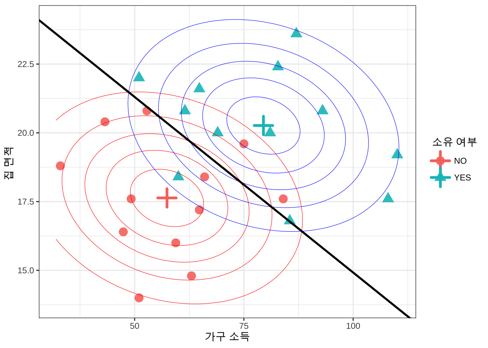

library(mvtnorm)
library(MASS)
library(tidyverse)
library(here)
library(knitr)
library(rmarkdown)
library(kableExtra)
library(flextable)
#아래 3 문장은 한글을 포함한 ggplot 그림이 포함된 HTML, PDF로 만드는 경우 사용
library(showtext)
#font_add_google("Nanum Pen Script", "gl")
font_add_google(name = "Noto Sans KR", family = "noto")
showtext_auto()5 판별분석
의사결정은 주어진 유한개의 선택들 중에서 하나를 고르는 것이다. 예를 들어 은행에서 대출 신청자에게 돈을 빌려줄지 말지, 이동 시에 택시를 탈지, 버스를 탈지 또는 지하철을 탈지 결정해야 한다. 인간은 의사결정을 할 때 어느 정도의 자신만의 규칙에 따라 움직이며(아닌 경우도 많지만..) 여러 번의 시행 착오 등을 거쳐서 좋은 선택을 위해 규칙을 바꾸기도 한다. 또한 유한개의 선택들은 대체로 두 가지의 선택이 있으며 둘 중 하나를 선택하는 경우가 많다.
예를 들어, 신용평가에서 은행은 과거 경험을 통해 두 부류의 고객이 있음을 알고 있다. 즉, 대출을 아무 문제 없이 상환하는 안전 고객과 상환에 어려움을 겪은 위험 고객이다. 새로운 고객이 대출을 신청할 때, 은행은 대출을 해줄지 말지를 결정해야 한다. 은행의 과거 기록은 두 부류의 고객에 대한 다수의 특성값들를 제공하며, 여기에는 나이, 급여, 혼인 여부, 대출 금액 등과 같은 다양한 정보가 포함된다. 새로운 고객은 새로운 특성값을 가지고 있으며 판별 규칙(Discrimination rule)은 이 새로운 고객을 두 집단 중 하나로 분류해야 하는 규칙을 말하는 것이다.
판별분석(Discriminant analysis)은 이러한 의사결정에서 통계적 분포과 방법을 사용하여 자료에 기반한 규칙을 정하는 방법이다. 기본적으로 전체 집단(모집단)이 두 개 이상의 집단들로 나누어져 있다고 생각하고 그 집단들에 대한 확률적 가정(분포 가정)을 고려한다. 같은 집단에 속하는 개체들은 유사하며 다른 집단에 속한 개체들은 그 특성이 다르다고 가정하고 이러한 집단의 특성을 확률적 분포로 나타낸다.
예를 들어 이동시 자가용을 타는 사람들과 대중교통을 타는 사람들은 소득의 분포가 다르다고 가정할 수 있다. 이러한 가정 아래 새로운 개체를 어느 집단에 배정하는지에 대한 규칙을 자료를 이용하여 정하는 방법이 판별분석이며 다양한 분류방법(classification)의 출발점이다. 유의할 점은 규칙을 정할 때 어떤 규칙이 좋은 것인지에 대한 기준을 생각해야 한다. 동일한 상황에서 두 가지 규칙을 비교할 수 있어야 더 나은 의사결정을 할 수 있다.
판별분석에서는 다음과 같은 개념들을 생각헤야 한다.
모집단을 구성하는 겹치지 않는 집단들(groups)
집단을 이루는 개체들의 특성(확률변수)과 그에 대한 분포
개체의 특성을 알 때 소속 집단을 결정하는 규칙
잘못된 판단(error)과 그에 상응하는 비용(cost)
어떤 규칙이 좋은 것인지 판단하는 기준
5.1 분포와 판별규칙
이 장에서는 두 개의 집단(population) \(P_1\) 과 \(P_2\) 을 고려한다. 예를 들어 은행에서는 전체 고객을 안전 고객과 위험 고객, 두 집단으로 나눌 수 있다.
각 집단에 속하는 개체들의 특성(확률벡터) \(\pmb X\) 은 속하는 집단에 따라서 각각 분포 \(F_i(\pmb x)\), \(i=1,2\) 를 따른다고 가정한다. 또한 \(f_i(\pmb x)\)를 분포 \(F_i\)의 확률밀도함수라고 하자.
판별 규칙(discrimination rule) 은 새로운 개체의 특성 \(\pmb X = \pmb x\) 가 주어졌을 때 이 개체가 어느 집단에 속하는지 결정하는 방법이다. 이러한 규칙은 개체의 특성삾이 가질 수 있는 전체 공간(표본공간)을 겹치지 않는 두 집합 \(R_1\) 과 \(R_2\) 로 나누고 관측된 값이 \(R_1\) 에 속하면 새로운 개체를 \(P_1\) 에 베정하고, 반대로 \(R_2\) 에 속하면 \(P_2\)에 배정하는 것으로 주어진다.
\[ \text { where } R_1 \cup R_2 = \RR^p, \quad R_1 \cap R_2 = \emptyset \tag{5.1}\]
즉, \(R_1\) 과 \(R_2\) 는 전체 공간을 겹치지 않게 나누는 두 집합이다. 판별 규칙은 다음과 같이 쓸 수 있다. \[ \pmb x \in R_1 \Rightarrow \text{개체를 } P_1 \text{에 배정} \\ \pmb x \in R_2 \Rightarrow \text{개체를 } P_2 \text{에 배정} \tag{5.2}\]
5.1.1 판별 오류와 비용
이제 \(i\) 집단에 속한 개체가 주어진 판별 규칙에 따라서 \(j\) 집단에 배정될 사건과 확률을 생각헤 보자. 먼저 \(i\) 집단에 속한 개체가 \(j\) 집단에 배정될 사건을 \(A(j|i) \equiv A_{ji}\) 라고 정의한다. 따라서 각 개체가 자신이 속한 집단에 배정된 사건, \(A_{11}\) 과 \(A_{22}\) 가 발생하면 판별규칙이 잘 적용된 경우이다. 반대로 개체가 자신이 속하지 않은 다른 집단에 배정된 사건, \(A_{12}\) 과 \(A_{21}\) 가 발생하면 오류가 발생한 경우이며 이러한 경우 오류에 의한 비용 \(c_{12}\), \(c_{21}\) 이 발생한다.
예를 들어 은행에서 대출 신청자가 우량 고객 \(P_1\) 에 속하는데 불량 고객 \(P_2\) 로 잘못 판별되어 대출을 거절하는 경우, 은행은 대출 이익을 얻지 못하는 손실 \(c_{21}\) 이 발생한다. 반대로 불량 고객 \(P_2\) 가 우량 고객 \(P_1\) 으로 잘못 판별되어 대출을 해주는 경우, 은행은 대출금을 상환받지 못하는 더 큰 손실 \(c_{12}\) 이 발생한다. 따라서 두 가지 오류에 대한 비용은 일반적으로 다르며, 이러한 비용을 고려하여 판별 규칙을 정하는 것이 중요하다.
5.1.2 최대가능도 규칙
이제 위에서 정의한 사건과 비용을 이용하여 판별 분석에서 다루는 중요한 확률을 생각해보자. 먼저 첫 집단 \(P_1\) 에 속한 개체가 주어진 판별 규칙에 따라서 두 번째 집단 \(P_2\) 에 배정될 사건확률은 다음과 같다.
\[ p_{21} \equiv P(A_{21}) = \int_{R_2} f_1(\pmb x) d\pmb x \tag{5.3}\]
마찬가지로 \(P_2\) 에 속한 개체가 \(P_1\) 에 배정될 확률은 다음과 같다.
\[ p_{12} \equiv P(A_{12}) = \int_{R_1} f_2(\pmb x) d\pmb x \tag{5.4}\]
위에서 정의한 두 확률 \(p_{12}\) 와 \(p_{21}\) 은 판별에서 오류가 발생한 확률이다.
판별 규칙을 만드는 것은 식 5.1 과 식 5.2 에서 정의한 두 집합 \(R_1\) 과 \(R_2\) 를 정하는 것이다. 따라서 잘못된 분류를 범할 확률 식 5.3 과 식 5.4 은 판별 규칙에 따라서 달라진다. 즉, \(R_1\) 과 \(R_2\) 를 다르게 정하면 오류 확률도 달라진다.
판별 규칙은 당연히 두 오류의 확률을 가장 작게 만드는 방향으로 정해져야 한다. 이제 앞에서 정의한 두 그룹의 분포를 이용하여 오류의 확률을 가장 작게 만드는 판별 규칙을 어떻게 정할 수 있는지 알아보자. 다음과 같이 두 오류를 범할 확률을 최소로 하는 판별 규칙을 찾으려 한다
\[ \min_{R_1, R_2} \{ p_{12} + p_{21} \} = \min_{R_1, R_2} \left [ \int_{R_1} f_2(\pmb x) d\pmb x + \int_{R_2} f_1(\pmb x) d\pmb x \right ] \tag{5.5}\]
위의 식은 두 오류 확률의 합을 최소로 하는 판별 규칙을 찾는 문제이다. 두 종류의 오류를 범할 확률의 합을 다시 살펴보면 다음과 같이 쓸 수 있다.
\[ \begin{aligned} p_{12} + p_{21} & = \int_{R_1} f_2(\pmb x) d\pmb x + \int_{R_2} f_1(\pmb x) d\pmb x \\ & = \int_{R_1} f_2(\pmb x) d\pmb x + 1 - \int_{R_1} f_1(\pmb x) d\pmb x \\ & = 1 + \int_{R_1} \{ f_2(\pmb x) - f_1(\pmb x) \} d\pmb x \end{aligned} \tag{5.6}\]
참고로 위의 식은 전채 공간에서의 확률밀도함수의 적분이 1임을 이용하였다.
\[ \int_{R_1} f_1{\pmb x} d \pmb x + \int_{R_2} f_1(\pmb x) d\pmb x = 1 \]
이제 식 5.6 의 적분값을 최소로 하는 \(R_1\) 을 찾으면 된다. 이 적분값을 최소로 하기 위해서는 적분하는 영역 \(R_1\) 에서 적분하는 함수 \(f_2(\pmb x) - f_1(\pmb x)\) 의 값이 음수인 부분만 포함되도록 하면 된다. 즉, 다음과 같은 조건을 만족하는 \(R_1\) 을 찾으면 된다.
\[ R_1 = \{ \pmb x | f_2(\pmb x) - f_1(\pmb x) < 0 \} = \{ \pmb x | f_1(\pmb x) > f_2(\pmb x) \} \tag{5.7}\]
만약 \(R_1\) 을 식 5.7 과 같이 정하면 \(R_2\) 는 자동으로 다음과 같이 정해진다.
\[ R_2 = \{ \pmb x | f_2(\pmb x) \ge f_1(\pmb x) \} \tag{5.8}\]
위의 유도에서 판별 규칙을 만들 때 중요한 요인은 두 확률밀도함수의 비(ratio)이다. 두 확률밀도함수의 비가 1 보다 큰 값을 가지는 표본 \(\pmb x\) 의 영역과 1 보다 작은 값을 가지는 표본 \(\pmb x\) 의 영역이 각각 \(R_1\) 과 \(R_2\)가 되는 것이다.
\[ \frac{f_1(\pmb x)}{f_2(\pmb x)} \]
앞에서 살펴보았듯이, 판별 함수를 만드는 가장 기본적인 방법은 최대 가능도 규칙(Maximum Likelihood Rule)이다. 이 방법은 새로운 개체의 특성 \(\pmb X = \pmb x\) 가 주어졌을 때, 각 집단에서 이 특성이 관측될 가능도(likelihood function)를 계산하여 더 큰 집단에 개체를 배정하는 방법이다. 즉, 다음과 같이 판별 규칙을 정의한다.
\[ \pmb x \in R_1 \text{ if } f_1(\pmb x) > f_2(\pmb x), \quad \text{ and } \quad \pmb x \in R_2 \text{ if } f_1(\pmb x) \le f_2(\pmb x) \]
5.1.3 베이지안 규칙
만약 각 집단에 속할 사전 확률(prior probability)이 각각 \(\pi_1\) , \(\pi_2\) 로 주어졌다고 하자. 사전확률은 관측하는 확률벡터의 분포를 고려하기 전에, 어떤 개체가 각 집단에 속할 가능성을 확률을 나타낸 것이다.
예를 들어 앞에서 생각한 예제에서 은행의 대출 신청자가 우량 고객 집단에 속할 가능성과 물량 고객 집단에 속할 가능성이 다를 수 있다. 대부분의 사람들이 대출을 계획대로 상환하였다면 임의의 고객이 우량 고객일 가능성이 불량 고객일 가능성보다 매우 크다고 할 수 있다. 이러한 사전 정보를 고려하여 판별 규칙을 정하는 임의의 고객이 우량 고객 집단 \(P_1\) 에 속할 사전 확률을 \(\pi_1\) 이라고 하고 불량 고객 \(P_2\) 에 속할 사전 확률이 \(\pi_2\) 라고 할 수 있는 것이다.
\[ \pi_1 = P(\text{고객} \in P_1), \quad \pi_2 = P(\text{고객} \in P_2), \quad \pi_1 + \pi_2 =1 \]
사전확률을 고려하는 경우, 베이즈 판별 규칙은 다음과 같이 정의된다. 즉, 새로운 개체의 특성 \(\pmb X = \pmb x\) 가 주어졌을 때, 각 집단에서 이 특성이 관측될 가능도(likelihood function)에 사전 확률을 곱한 값을 계산하여 더 큰 집단에 개체를 배정하는 방법이다. 이 경우 베이즈 판별 규칙(Bayes Discrimination Rule)은 다음과 같이 정의된다.
\[
\pmb x \in R_1 \text{ if } \pi_1 f_1(\pmb x) > \pi_2 f_2(\pmb x), \quad \text{ and } \quad \pmb x \in R_2 \text{ if } \pi_1 f_1(\pmb x) \le \pi_2 f_2(\pmb x)
\]
위의 규칙에서 가능도 함수와 사전 확률의 곱을 사후 확률(posterior probability)이라고 한다. 사후 확률은 관측된 표본의 값이 주어진 경우 개체가 집단에 속할 확률을 의미한다.
\[ P (P_i | \pmb X = \pmb x) \propto \pi_i f_i(\pmb x), \quad i=1,2 \]
5.1.4 최적 판별 규칙
이제 판별에서 발생하는 오류에 대한 비용도 함께 고려할 수 있는 최적의 규칙을 고려해 보자. 앞 절에서 정의한 오류에 대한 비용 \(c_{12}\) 와 \(c_{21}\) 을 고려할 때 최적 판별 규칙은 다음에서 정의한 기대 오류비용 (Expected cost of misclassification; ECM) 을 최소로 하는 규칙이다.
\[ \text{ECM} = c_{12} p_{12} \pi_2 + c_{21} p_{21} \pi_1 \tag{5.9}\]
기대 오류비용(ECM)을 최소로 하는 판별 규칙을 유도하면 다음과 같은 최적 판별 규칙을 얻을 수 있다.
\[ R_1 = \left \{ \pmb x | \frac{f_1(\pmb x)}{f_2(\pmb x)} > \left [ \frac{c_{12}}{c_{21}} \right ] \left [ \frac{\pi_2}{\pi_1} \right ] \right \}, \quad R_2 = \left \{ \pmb x | \frac{f_1(\pmb x)}{f_2(\pmb x)} \le \left [ \frac{c_{12}}{c_{21}} \right ] \left [ \frac{\pi_2}{\pi_1} \right ] \right \} \tag{5.10}\]
식 5.10 에서 알 수 있듯이, 최대가능도 규칙과 베이즈 판별 규칙은 기대 오류비용을 최소화하는 최적 규칙의 특별한 경우이다. 즉, 비용이 동일한 경우 \(c_{12} = c_{21}\) 에는 베이즈 판별 규칙과 동일하다. 또한 사전 확률도 동일한 경우 \(\pi_1 = \pi_2\) 에는 최대 가능도 판별 규칙과 동일하다.
예제 5.1 (두 정규 분포의 판별 규칙) 두 집단 \(P_1\) 과 \(P_2\) 에 속한 개체들의 특성 \(\pmb X\) 가 각각 다음과 같은 분산이 동일한 일변량 정규 분포를 따른다고 하자.
\[ X | P_1 \sim N( \mu_1, \sigma^2), \quad X | P_2 \sim N(\mu_2, \sigma^2), \quad \mu_1 < \mu_2 \] 이제 두 정규분포 확률밀도함수의 비, 최대가능도 함수의 비율을 고려해 보자.
\[
\frac{f_1(x)}{f_2(x)} = \exp \left \{ - \left ( \frac{(x - \mu_1)^2}{2\sigma^2} \right ) - \left ( - \frac{(x - \mu_2)^2}{2\sigma^2} \right ) \right \}
\]
위의 식에서 두 정규분포의 비가 1 보다 큰 표본의 영역 \(R_1\) 을 구하면 다음과 같다.
\[ \begin{aligned} & \frac{f_1(x)}{ f_2(x)} > 1 \\ & \Longleftrightarrow -\frac{1}{2\sigma^2}(x-\mu_1)^2 + \frac{1}{2\sigma^2}(x-\mu_2)^2 > \log(1) \\ & \Longleftrightarrow 2x\mu_1 -\mu_1^2 -2x \mu_2 + \mu_2^2 > 0 \\ & \Longleftrightarrow 2x(\mu_1 - \mu_2) > \mu_1^2 - \mu_2^2 \\ & \Longleftrightarrow x < \frac{\mu_1+\mu_2}{2} \end{aligned} \]
따라서 두 집단의 평균의 중간에 있는 값 \((\mu_1 + \mu_2)/2\) 보다 관측한 값 \(x\) 가 작으면 그룹 \(P_1\) 에 속한다고 결정한다.
\[ R_1 = \left \{ x | x < \frac{\mu_1 + \mu_2}{2} \right \}, \quad R_2 = \left \{ x | x \ge \frac{\mu_1 + \mu_2}{2} \right \} \]
\(\square\)
5.2 다변량 정규분포와 판별 규칙
앞 절에서는 개체의 특성을 나타내는 확률변수가 일변량 정규분포인 경우의 예제를 보았다. 일반적인 경우 개체의 특성을 나타내는 특성값은 두 개 이상인 경우가 흔하다. 따라서 이제는 개체의 특성이 여러 개의 확률변수, 즉 확률벡터로 구성되어 있다고 가정하자.
\(p\)차원 확률벡터 \(\pmb X\) 를 고려하며 분포는 다변량 정규분포를 가정한다. 정규분포의 가정은 강한 가정이지만 단순하고 다루기 쉬운 분포이며 실제로 사용하기 용이하다. (하지만 조심해서 가정을 검토해야함)
두 개의 다변량정규분포를 따르는 두 집단 \(P_1, P_2\)으로 나누어져 있다고 가정하고 두 분포를 고려하자. 처음에는 문제를 쉽게 하기 위하여 평균은 다르고 공분산은 같다고 가정하자
\[ P_1 : ~N_p (\pmb \mu_1, \pmb \Sigma) , \quad P_2 :~ N(\pmb \mu_2, \pmb \Sigma) \quad \text{ where } \pmb \mu_1 \ne \pmb \mu_2 \]
참고로 다변량 정규 분포의 확률 밀도 함수는 다음과 같다.
\[ f(\pmb x) = (2 \pi)^{-p/2} |\pmb \Sigma |^{-1/2} \exp \left [ -\frac{1}{2} (\pmb x -\pmb \mu)^t \pmb \Sigma^{-1} (\pmb x -\pmb \mu) \right ] \]
식 5.9 에서 기대 오류비용 ECM 을 최소하는 판별규칙 식 5.10 과 같이 구할 수 있으며 이제 다변량 정규분포의 확률밀도함수를 식 5.10 에 넣고 판별함수를 유도해 보자.
\[ \begin{aligned} \frac{f_1(\pmb x)}{f_2(\pmb x)} & = \exp \left [ -\frac{1}{2} (\pmb x -\pmb \mu_1)^t \pmb \Sigma^{-1} (\pmb x -\pmb \mu_1) + \frac{1}{2} (\pmb x -\pmb \mu_2)^t \pmb \Sigma^{-1} (\pmb x -\pmb \mu_2)\right ] \\ & = \exp \left [ (\pmb \mu_1-\pmb \mu_2)^t \pmb \Sigma^{-1} \pmb x - \frac{1}{2} \pmb \mu_1^t \pmb \Sigma^{-1} \pmb \mu_1 +\frac{1}{2} \pmb \mu_2^t \pmb \Sigma^{-1} \pmb \mu_2) \right ] \\ &= \exp \left [ (\pmb \mu_1-\pmb \mu_2)^t \pmb \Sigma^{-1} \pmb x - \frac{1}{2} (\pmb \mu_1-\pmb \mu_2)^t \pmb \Sigma^{-1} (\pmb \mu_1+\pmb \mu_2) \right ] \end{aligned} \]
이제 ECM을 최소화하는 규칙은 개체의 특성이 \(\pmb x =\pmb x_0\) 로 주어진 경우 다음을 만족하면 \(P_1\)으로 분류한다.
\[ (\pmb \mu_1-\pmb \mu_2)^t \pmb \Sigma^{-1} \pmb x_0 - \frac{1}{2} (\pmb \mu_1-\pmb \mu_2)^t \pmb \Sigma^{-1} (\pmb \mu_1+\pmb \mu_2) > \log \left ( \frac{c_{12}}{c_{21}} \frac{\pi_2}{\pi_1} \right ) \]
실제로 \(\pmb \mu_1\), \(\pmb \mu_2\), \(\pmb \Sigma\)은 알 수 없기 때문에 표본 자료를 이용하여 추정을 한다.
\[ \hat {\pmb \mu}_1 = \bar {\pmb x}_1 \quad \text{and} \quad \hat {\pmb \mu}_2 = \bar {\pmb x}_2 \]
\[ \hat {\pmb \Sigma} = \pmb S_{p} = \frac{(n_1-1) \pmb S_1+(n_2-1) \pmb S_2}{ n_1+n_2-2 } \]
여기서 \(n_1\), \(n_2\)는 표본에서 두 그룹에 대한 표본의 크기이며 \(\bar {\pmb x}_1\), \(\bar {\pmb x}_2\)는 각각의 표본평균 벡터이다. \(\pmb S_{p}\)는 두 개의 그룹에서 구한 공분산 행렬의 추정치를 결합한 합동 공분산 추정량이다.
위에서 구한 모수들의 추정치를 모집단으로 부터 구한 판별함수에 넣으면 다음과 같은 표본을 이용한 판별함수가 얻어진다.
\[ (\bar {\pmb x}_1-\bar {\pmb x}_2)^t \pmb S_{p}^{-1} \pmb x_0 - \frac{1}{2} (\bar {\pmb x}_1-\bar {\pmb x}_2)^t \pmb S_{p}^{-1} (\bar {\pmb x}_1+\bar {\pmb x}_2) > \log \left ( \frac{c(1|2)}{c(2|1)} \frac{\pi_2}{\pi_1} \right ) \tag{5.11}\]
위 식 5.11 의 표본 판별함수에서 아래와 같이 벡터 \(\pmb a\)와 상수 \(m\)을 정의하면
\[ \begin{aligned} \pmb a & = \pmb S_{p}^{-1} (\bar {\pmb x}_1-\bar {\pmb x}_2) \\ m & = \frac{1}{2} (\bar {\pmb x}_1-\bar {\pmb x}_2)^t \pmb S_{p}^{-1} (\bar {\pmb x}_1+\bar {\pmb x}_2) = \frac{1}{2}(\pmb a^t \bar {\pmb x}_1 + \pmb a^t \bar {\pmb x}_2) \end{aligned} \tag{5.12}\]
ECM을 최소화하는 판별 규칙은 다음과 같이 특성값 \(\pmb x_0\)의 선형함수로 나타낼 수 있다.
\[ \pmb a^t \pmb x_0 > m + \log \left ( \frac{c(1|2)}{c(2|1)} \frac{\pi_2}{\pi_1} \right ) \tag{5.13}\]
만약 비용이 같고 (\(c_{12}=c_{21}\)) 두 집단에 대한 사전확률이 같다면 (\(\pi_1=\pi_2\)) 판별함수는 다음과 같이 간단하게 나타낼 수 있다.
\[ \pmb a^t \pmb x_0 > m \tag{5.14}\]
마지막으로 두 모집단의 공분산이 다를 경우는 판별함수가 확률벡터 \(\pmb x\)의 선형함수로 나타나지 않는다.
5.3 Fisher의 선형 판별함수
Fisher(1938)는 위에서 다룬 ECM을 최소화하는 판별함수를 유도하는 방법과 완전히 다른 규칙을 사용하여 ECM을 최소화하는 방법과 동일한 결과를 유도하였다.
Fisher는 다변량 확률벡터 \(\pmb x\)를 일변량 변수 \(y\) 로 선형변환하여 차원을 축소하는 방법을 고려하였다. 차원을 축소할 때 축소된 차원의 특성값 \(y\)가 두 집단을 최대로 구별되게 하는 선형변환을 구하는 문제를 생각하였다. Fisher의 방법은 특성값 벡터 \(\pmb x\)에 확률적 분포가정을 고려하지 않는다.
특성값 벡터 \(\pmb x_1\)을 집단 \(P_1\)의 특성값이라고 하고 \(\pmb x_2\)을 집단 \(P_2\)의 특성벡터라고 하자. 이제 특성값 벡터 \(\pmb x_1\)과 \(\pmb x_2\)에 동시에 적용하는 선형변환 벡터를 \(\pmb a\)라고 하고 각 집단의 일변량 특성값 \(y_1\)과 $ y_2$를 다음과 같이 정의하자.
\[ y_1 = \pmb a^t \pmb x_1 \quad \text{and} \quad y_2 = \pmb a^t \pmb x_2 \] 이제 두 집단에서 각각 \(n_1\), \(n_2\) 개의 표본을 독립적으로 추출하였다거 가정하자.
\[ y_{11}, y_{12}, \dots, y_{1 n_1} \sim_{ind} P_1 \quad \text{and} \quad y_{21}, y_{22}, \dots, y_{2 n_2} \sim_{ind} P_2 \] 각 집단의 평균벡터는 다음과 같이 일변량 평균으로 변환된다. \[ \bar y_1 = \pmb a^t \bar {\pmb x}_1 \quad \text{and} \quad \bar y_2 = \pmb a^t \bar {\pmb x}_2 \]
Fisher의 방법은 변환된 일변량 변수 \(y\)가 두 집단 간의 차이를 최대로, 집단 내의 차이를 최소로 하도록 하는 선형변환 \(\pmb a\)를 유도하는 것이다.
두 집단 간의 차이를 최대로 하는 것은 두 평균의 차이 \(|\bar y_1 -\bar y_2|\)가 커지게 하는 것이고 집단 내의 차이를 최소로 하도록 하는 것은 집단내의 변동, 즉 집단내의 분산을 작게하는 것이다. 이러한 두 집단 간의 차이와 집단 내의 변동을 같이 반영할 수 있는 측도를 다음과 같이 생각하였다.
\[ \max_{\pmb a} \frac {| \bar y_1 - \bar y_2|} {s_y} = \max \frac{ \text{variation between groups}}{\text{variation within group}} \tag{5.15}\]
여기서 $s^2_y $는 두 집단의 특성값 \(y\)의 합동분산 추정량이다.
\[ s^2_y =\frac {\sum_{j=1}^{ n_1}(y_{1j} -\bar y_1)^2 + \sum_{j=1}^{ n_2}(y_{2j} -\bar y_2)^2 }{n_1+n_2-2} \]
이제 두 집단 간의 차이를 최대로, 집단 내의 변동를 최소로 하는 변환을 유도해보자. 식 5.15 에 제시된 값의 제곱이 가질 수 있는 상한(upper bound)을 유도하고 그 상한값을 취하는 선형변환 벡터 \(\pmb a\)를 찾아보자.
여기서 두 집단의 평균벡터의 차이 \(\pmb d\)를 다음과 같이 정의한다.
\[ \pmb d =(\bar {\pmb x}_1 - \bar {\pmb x}_2) \]
이제 식 5.15 에 주어진 값의 제곱에 대한 상한을 유도해보자.
\[ \begin{aligned} \frac {( \bar y_1 - \bar y_2)^2} {s^2_y} &= \frac{ ( \pmb a^t \bar {\pmb x}_1 - \pmb a^t \bar {\pmb x}_2)^2} { \pmb a^t \pmb S_{p} \pmb a } \\ & = \frac{ [ \pmb a^t (\bar {\pmb x}_1 - \bar {\pmb x}_2)]^2} { \pmb a^t \pmb S_{p} \pmb a } \\ & = \frac{ ( \pmb a^t \pmb d)^2} { \pmb a^t \pmb S_{p} \pmb a } \\ &= \frac{ ( \pmb a^t \pmb S_{p}^{1/2} \pmb S_{p}^{-1/2} \pmb d)^2} { \pmb a^t \pmb S_{p} \pmb a } \\ & \le \frac{ ( \pmb a^t \pmb S_{p} \pmb a) ( \pmb d^t \pmb S_{p}^{-1} \pmb d)} { \pmb a^t \pmb S_{p} \pmb a } \\ &= \pmb d^t \pmb S^{-1}_{p} \pmb d \end{aligned} \tag{5.16}\]
위에서 부등식은 코쉬-쉬바르쯔 부등식(Cauchy–Schwarz Inequality) 을 적용한 결과이며 부등식의 등호는 다음과 같은 경우에 성립한다.
\[ \pmb a = \pmb S^{-1}_{p} \pmb d = \pmb S^{-1}_{p} (\bar {\pmb x}_1 - \bar {\pmb x}_2) \tag{5.17}\]
코쉬-쉬바르쯔 부등식
두 벡터 \(\pmb u\)와 \(\pmb v\)에 대하여 다음 부등식(Cauchy–Schwarz Inequality)이 성립한다.
\[ |\pmb u^t \pmb v|^2 \le (\pmb u^t \pmb u)(\pmb v^t \pmb v) \] 부등식의 등호는 \(\pmb u\)와 \(\pmb v\)가 선형종속일 때, 즉 \(\pmb u = c \pmb v\) 인 경우 성립한다.
식 5.16 에서 다음과 같이 벡터 \(\pmb u\) 와 \(\pmb v\) 를 적용하면 원하는 결과를 얻는다.
\[ \pmb u = \pmb S_{p}^{1/2} \pmb a \quad \text{and} \quad \pmb v = \pmb S_{p}^{-1/2} \pmb d \]
식 5.17 에서 유도한 선형변환 벡터 \(\pmb a\)는 다변량 정규분포 가정하에서 ECM을 최소화하는 판별함수의 선형벡터 식 5.12 와 동일하다.
더 나아가 예제 5.1 의 결과를 이용하면, 두 집단의 평균이 각각 \(\bar y_1\) 과 \(\bar y_2\) 이므로 새로운 관측값 \(y_0 = \pmb a^t \pmb x_0\) 의 값을 두 평균의 가운데 값, 즉 \(m=(\bar y_1 + \bar y_2)/2\)와 비교하여 판별할 수 있다. 즉, 개체의 특성값 \(y_0 = \pmb a^t \pmb x_0\)일 때 다음을 만족하면 집단 \(P_1\)으로 분류한다.
\[ y_0 > m \]
여기서
\[ y_0= \pmb a^t\pmb x_0= (\bar {\pmb x}_1-\bar {\pmb x}_2)^t \pmb S_{p}^{-1} \pmb x_0 \]
\[ m=\frac{1}{2} (\bar {\pmb x}_1-\bar {\pmb x}_2)^t \pmb S_{p}^{-1} (\bar {\pmb x}_1+\bar {\pmb x}_2)= \frac{1}{2} \pmb a^t (\bar {\pmb x}_1+\bar {\pmb x}_2) = \frac{1}{2} {(\bar y_1 +\bar y_2} ) \]
따라서 Fisher의 판별함수에 의한 분류 규칙은 다변량 정규분포 가정하에 ECM을 최소로 하는 규칙 식 5.14 과 동일하다.
5.4 예제: 잔디깎는 트렉터
다음은 미국에서 한 소비용품 판매점이 잔디깍는 트랙터(lawn mower)의 소유 여부에 대한 가구의 소득과 집 크기의 관계를 알아보기 위하여 고객의 정보를 수집한 자료이다. 총 24개의 자료가 있고 트랙터를 소유하지 않는 집과 소유한 집이 각각 12개이다.
변수 income 과 lotsize 는 각각 가구 소득과 집의 크기에 대한 변수이다. 트랙터를 소유한 상태를 나타내는 변수는 class 이며 값이 2 이면 소유하지 않는 상태(NO,그룹 1), 1 이면 소유한 상태(YES, 그룹 2) 를 나타낸다.
# read data
df <- read.csv(here("data","lawn.csv") , header=T, sep="")
df$class <- factor(df$class, levels=c(2,1), labels=c( "NO","YES"))
head(df) income lotsize class
1 60.0 18.4 YES
2 85.5 16.8 YES
3 64.8 21.6 YES
4 61.5 20.8 YES
5 87.0 23.6 YES
6 110.1 19.2 YES이제 트렉터 소유의 여부와 소득/집크기의 관계를 알아보기 위하여 이차원에 자료를 그림으로 나타내보자.
# plot data wiyth different symbol by uisng ggplot2
df %>% ggplot(aes(x=income,y=lotsize, shape=class, color=class)) +
geom_point(size=4, alpha = 0.7) +
theme_bw() +
labs(x="가구 소득",y="집 면적 ",shape="소유 여부", color = "소유 여부")이제 앞절에서 유도한 선형판별함수를 트렉터 자료에 적용하여 판별함수를 구해보자. 일단 표본 평균벡터와 합동 공분산 행렬을 계산한다.
# 각 그룹의 표본 크기
n1 <- sum(df$class == "NO" )
n2 <- sum(df$class == "YES" )
n1[1] 12n2[1] 12# 각 그룹의 평균벡터
mean_vec <- df %>%
group_by(class) %>%
summarise(across(c(income, lotsize), mean))
mean_vec# A tibble: 2 × 3
class income lotsize
<fct> <dbl> <dbl>
1 NO 57.4 17.6
2 YES 79.5 20.3mean_x1 <- mean_vec %>% dplyr::filter(class == "NO" ) %>%
dplyr::select(income, lotsize) %>%
as.matrix() %>% t()
mean_x2 <- mean_vec %>% dplyr::filter(class == "YES" ) %>%
dplyr::select(income, lotsize) %>%
as.matrix() %>% t()
mean_x1 [,1]
income 57.40000
lotsize 17.63333mean_x2 [,1]
income 79.47500
lotsize 20.26667# 각 그룹의 공분산 행렬
cov_tbl <- df %>%
group_by(class) %>%
summarise(cov = list(cov(across(c(income, lotsize)))), .groups = "drop")
cov_x1 <- cov_tbl %>% filter(class == "NO" ) %>% pull(cov) %>% .[[1]]
cov_x1 income lotsize
income 200.705455 -2.589091
lotsize -2.589091 4.464242cov_x2 <- cov_tbl %>% filter(class == "YES" ) %>% pull(cov) %>% .[[1]]
cov_x2 income lotsize
income 352.64386 -11.818182
lotsize -11.81818 4.082424# 합동 공분산 행렬
#cov_p <- ((n1-1)*cov_x1 + (n2-1)*cov_x2)/(n1+n2-2)
cov_p <- (n1*cov_x1 + n2*cov_x2)/(n1+n2)
cov_p income lotsize
income 276.674659 -7.203636
lotsize -7.203636 4.273333이제 트렉터 자료에 적용하여 앞장에서 구한 최적의 판별 규칙을 유도해보자. 먼저 식 5.12 와 식 5.17 에 나타난 최적 변환 벡터 \(\pmb a\) 와 상수 \(m\) 는 다음과 같이 구할 수 있다.
# find discriminant function
a <- solve(cov_p) %*% (mean_x1 - mean_x2)
a [,1]
income -0.1002303
lotsize -0.7851847m <- t(mean_x1 - mean_x2) %*% solve(cov_p) %*% (mean_x1 + mean_x2)/2
m [,1]
[1,] -21.73876따라서 새로운 특성값 벡터를 \(\pmb x_0= (x_{10},~x_{20})^t\) 이라고 하면 ECM을 최소화하는 판별함수는 다음과 같이 주어진다. 즉, 다음 조건이 만족하면 그룹 1, 즉 트랙터를 사지 않는 그룹에 속한다.
\[ (-0.1002303) \times (x_{10}) + (-0.7851847) \times (x_{20}) > -21.7387617 \]
만약 income 과 lotsize가 각각 70, 16 이라면 다음과 같이 \(\pmb a^t \pmb x_0\) 를 구할 수 있다.
x_0 <- matrix(c(70, 16),2,1)
x_0 [,1]
[1,] 70
[2,] 16t(a) %*% x_0 [,1]
[1,] -19.57908다시 쓰면
\[
(-0.1002303) \times (70) + (-0.7851847) \times (16) = -19.5790766
\] 따라서 -19.5790766 > -21.7387617 이므로 그룹 1 (NO) 에 속한다고 판별한다.즉 트랙터를 소유하지 않는 집단에 속한다고 판별한다.
t(a) %*% x_0 > m [,1]
[1,] TRUE즉, income 과 lotsize가 각각 70, 16 이면 \(\pmb a^t \pmb x_0 > m\) 을 만족하므로 트렉터를 소유하지 않을 그룹 (NO) 에 속한다고 판별한다.
트랙터를 소유한 집단과 소유하지 않은 집단에서 소득과 집크기에 대하여 이변량 정규분포를 가정하고 각 집단의 평균벡터와 공통 공분산을 구하여 이변량 정규분포의 확률밀도함수를 이차원 평면에 표시해보았다. 또한 앞에서 구한 선형 판별함수의 경계선 \(\pmb a^t \pmb x = m\) 을 표시하였다
# 등고선을 위한 격자점 생성
grid <- expand.grid(
income = seq(min(df$income) - 1, max(df$income) + 1, length = 100),
lotsize = seq(min(df$lotsize) - 1, max(df$lotsize) + 1, length = 100)
)
# 각 집단의 이변량 정규분포 확률밀도함수 계산
grid$dx1 <- dmvnorm(grid[,c("income","lotsize")], mean = mean_x1, sigma = cov_p)
grid$dx2 <- dmvnorm(grid[,c("income","lotsize")], mean = mean_x2, sigma = cov_p)
# 산점도와 등고선, 판별 경계선 그리기
df %>% ggplot(aes(x=income,y=lotsize, shape=class, color=class)) +
geom_point(size=4, alpha = 0.9) +
# 평균벡터 표기
geom_point(data = mean_vec, aes(x=income, y=lotsize, color=class), shape=3, size=5, stroke=2) +
# 등고선 1
geom_contour(
data = grid,
aes(x = income, y = lotsize, z = dx1),
color = "red", linewidth = 0.2, bins = 6,
inherit.aes = FALSE
) +
# 등고선 2
geom_contour(
data = grid,
aes(x = income, y = lotsize, z = dx2),
color = "blue", linewidth = 0.2, bins = 6,
inherit.aes = FALSE
) +
# 판별 경계선
geom_abline(
intercept = m/a[2], slope = -a[1]/a[2],
color = "black", linewidth = 1
) +
theme_bw() +
labs(x="가구 소득",y="집 면적 ",shape="소유 여부", color = "소유 여부")
패키지 MAASS 의 함수 lda()을 이용하면 앞에서 구한 Fisher 의 선형판별함수를 쉽게 구할 수 있다.
fisher_model <- lda(class ~ income + lotsize, data = df, method="moment")
fisher_modelCall:
lda(class ~ income + lotsize, data = df, method = "moment")
Prior probabilities of groups:
NO YES
0.5 0.5
Group means:
income lotsize
NO 57.400 17.63333
YES 79.475 20.26667
Coefficients of linear discriminants:
LD1
income 0.0484468
lotsize 0.3795228# 판별 벡터
fisher_model$scaling LD1
income 0.0484468
lotsize 0.3795228참고로 함수 lda 의 결과값인 Coefficients of linear discriminants 는 식 5.17 에서 구한 최적 변환 백터 \(\pmb a\) 와 같은 방향의 벡터이지만 길이가 다른 점에 유의하자.
# lda 함수의 결과와 비교
a/a[1] [,1]
income 1.000000
lotsize 7.833806fisher_model$scaling/fisher_model$scaling[1] LD1
income 1.000000
lotsize 7.833806이제 위에서 고려한 값, 즉 income 과 lotsize가 각각 70, 16 이라면 다음과 같이 새로운 데이터프레임을 만들고 predict 함수를 사용하여 앞에서 구한 판별 결과와 동일한 결과를 얻을 수 있다.
new_data <- data.frame(income = 70, lotsize = 16)
predict(fisher_model, newdata = new_data)$class
[1] NO
Levels: NO YES
$posterior
NO YES
1 0.8965703 0.1034297
$x
LD1
1 -1.043894